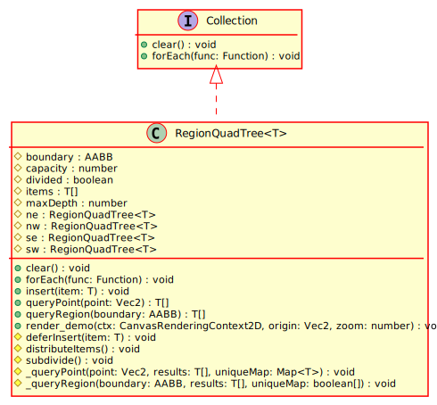

Type Parameters
Hierarchy-Diagram
{kind=link}
Legend
 class
class
 interface
interface
 protected property
protected property
 public method
public method
 protected method
protected method
Hierarchy
- RegionQuadTree
Implements
Index
Constructors
constructor
Type Parameters
Parameters
Returns RegionQuadTree<T>
Properties
Protected boundary
The center of this quadtree
Protected capacity
The number of elements this quadtree root can hold before splitting
Protected divided
Represents whether the quadtree is a root or a leaf
Protected items
The array of the items in this quadtree
Protected max
The maximum height of the quadtree from this root
Protected ne
The top right child
Protected nw
The top left child
Protected se
The bottom right child
Protected sw
The bottom left child
Methods
Protected _query
Protected _query
A recursive function called by queryPoint
Parameters
boundary: AABB
results: T[]
The results matrix
uniqueMap: boolean[]
A map that stores the unique ids of the results so we know what was already found
Returns void
clear
Clears the contents of the data structure
Returns void
Protected defer
Defers this insertion to the children of this quadtree
Parameters
item: T
The item to insert
Returns void
Protected distribute
Distributes the items of this quadtree into its children.
Returns void
for
Iterates through all of the items in this data structure.
Parameters
func: Function
Returns void
insert
Inserts a new item into this quadtree. Defers to children if this quadtree is divided or divides the quadtree if capacity is exceeded with this add.
Parameters
item: T
The item to add to the quadtree
Returns void
query
Returns all items at this point.
Parameters
point: Vec2
The point to query at
Returns T[]
A list of all elements in the quadtree that contain the specified point
query
Returns all items in this region
Parameters
boundary: AABB
The region to check
Returns T[]
A list of all elements in the specified region
render_
Parameters
ctx: CanvasRenderingContext2D
origin: Vec2
zoom: number
Returns void
Protected subdivide
Divides this quadtree up into 4 smaller ones - called through insert.
Returns void
A quadtree data structure implemented to work with regions rather than points. Elements in this quadtree have a position and an area, and thus can span multiple quadtree branches.